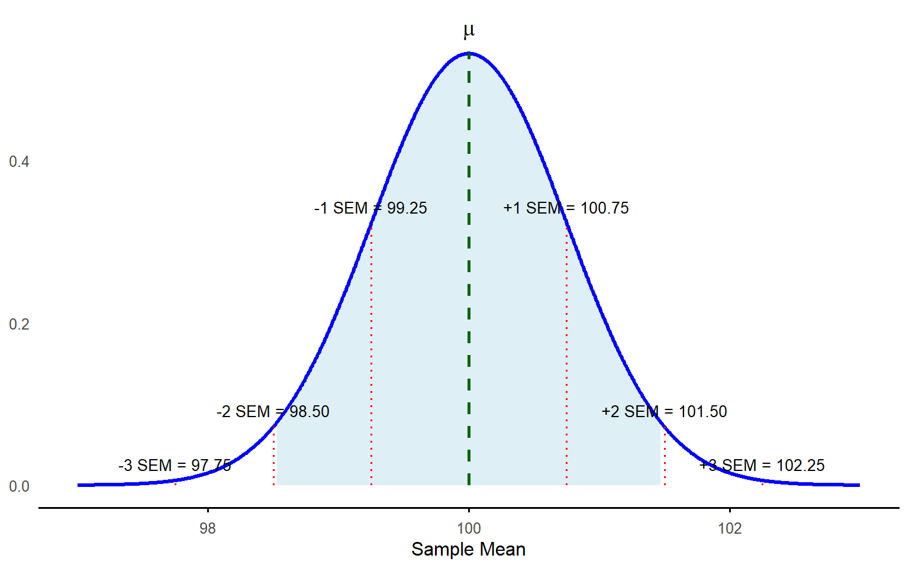
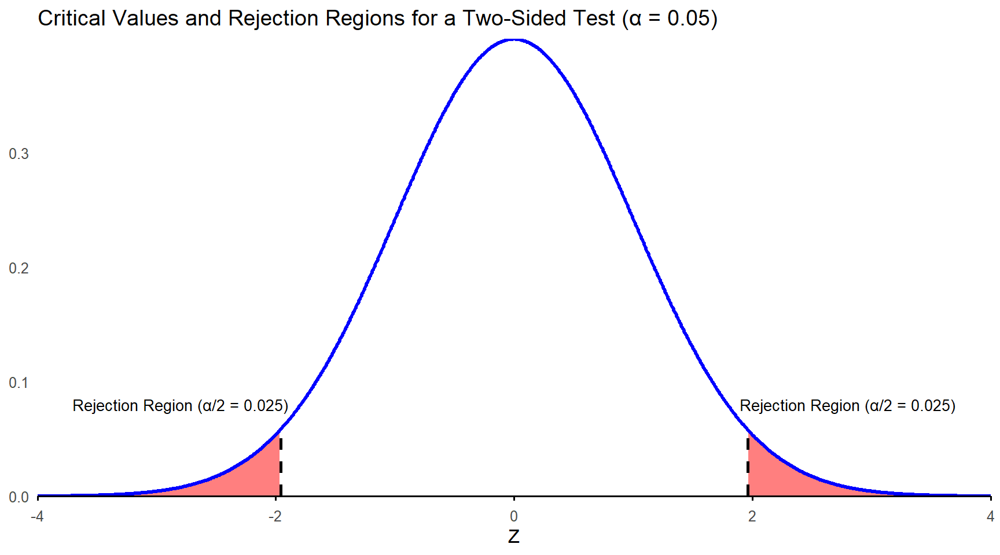
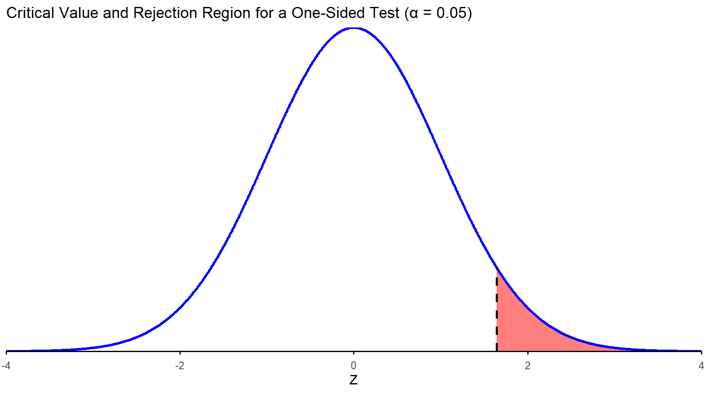
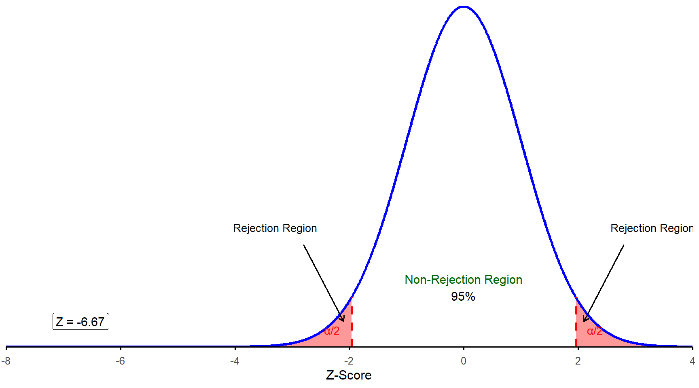

7 Chapter 7
Foundations of Statistical Inference: Understanding Hypothesis Testing
Learning Objectives
By the end of this chapter, you will be able to:
Identify and formulate null and alternative hypotheses based on research questions and determine their relevance in statistical analysis.
Understand when and how a one-sample z test is used to evaluate the difference between a sample mean and a known population mean.
Accurately interpret a p value to draw meaningful conclusions from the result of a one-sample z test and explain the finding.
Demonstrate the ability to execute hypothesis testing, including setting decision criteria, computing test statistics, and making evidence-based conclusions.
In this chapter, we will begin learning methods for inferential statistical analysis of educational data to address specific research questions. Stating a research question identifies the specific reason for, or purpose of, your investigation. A research question can help educators differentiate between real patterns in the data and patterns that may happen simply by chance. In addition, focusing on your research question helps ensure your study stays on track and avoids distractions from looking at unrelated variables or issues.
7.1 What is a Hypothesis?
The American Psychological Association (2018) defines a hypothesis as “an empirically testable proposition about some fact, behavior, relationship, or the like, usually based on theory, that states an expected outcome resulting from specific conditions or assumptions.” Research hypothesis is also defined as “a statement describing the investigator’s expectation about the pattern of data that may result from a given study. By stating specific expectations before the data are collected, the investigator makes a commitment about the direction (e.g., Method A will yield higher final exam scores than Method B) and magnitude (e.g., participants’ income will increase with more education) of potential relationships based on the study’s theoretical framework and related prior studies.”
Let’s consider a specific scenario: A third-grade teacher had reason to suspect (hypothesize) that the district’s current math curriculum was not benefiting both high- and low-achieving students. The teacher was concerned that using this curriculum might result in low third grade math performance across the district on the state assessment compared to the overall state average.
You could imagine all kinds of interesting questions to ask about this situation, but only some could be turned into a quantitative research question with a testable hypothesis. For example: - Is the average third grade math performance in the district significantly different from the overall state third grade average?
- Do students in the teacher’s class who rank above average in math show the same level of growth over the course of the year as students who rank below average in math?
7.2 Hypothesis Testing
Hypothesis testing is a statistical procedure used to make decisions or draw conclusions about a population based on sample data. It provides a structured framework to determine whether there is enough evidence in the observed data to support a specific hypothesis about a population parameter, such as the mean.
There are four major steps in the process of hypothesis testing:
State the research question and determine the null and alternative hypotheses.
Set the criteria for a decision. How much of a difference is significant enough to draw a conclusion?
Verify that data meet necessary assumptions for the statistical method and calculate the test statistic.
Draw a conclusion for your research question.
We will use the teacher’s first research question as an example to review the steps in hypothesis testing. We will assume the teacher had access to the districtwide average math score computed based on a sample of 400 third graders (\(\bar{X} = 95\)) and the state population results (\(\mu = 100, \sigma = 15\)).
Before proceeding, we need to introduce the concept of a statistical test. A statistical test is a mathematical tool used to analyze data and evaluate a hypothesis. Specifically, it determines the likelihood that an observed pattern in the sample data (e.g., the sample mean) occurred due to random chance or represents a real characteristic of the population (e.g., the population mean). In essence, a statistical test operates within the process of hypothesis testing.
In this example, an appropriate statistical test is the one-sample z test, the first statistical test we will introduce. The one-sample z test is a method used to determine whether a specific mean (\(\bar{X} = 95\)) from a single sample (e.g., the sample of 400 third graders) is significantly different from a known or hypothesized population mean (\(\mu = 100\)), assuming the population standard deviation is known (\(\sigma = 15\)). Now, let’s review the steps of hypothesis testing to understand how to conduct a one-sample z test.
7.2.1 Step 1: State the research question and determine the null and alternative hypotheses.
As a reminder, we are using the following research question: Is the average third grade math performance in the teacher’s district significantly different from the overall state third grade average? At first, it may seem odd to ask this since we already know they are different: \(95 \ne 100\), but there are some uncertainties to contend with.
The district average is based on a sample. We know from chapter 6 that our sample mean could vary, slightly or to a large extent, depending on which students were absent on the day of the test. Before we make a conclusion about the difference, we need to account for possible sampling error.
We also need to account for how much natural variation there is in test scores among students. The standard deviation of the state population is 15 points, meaning some students score well above and below the mean. We use this information to judge whether the observed average difference of 5 points should be considered statistically significant or whether it could likely be only due to chance.
Whenever we begin a hypothesis test, we need to state two different hypotheses. The null hypothesis (\(H_0\)) is the statement that is being tested and most commonly means some version of nothing to see here (e.g., no difference, no effect, no relationship). We assume the null is true unless we have evidence that it is not. We also state this hypothesis in terms of the population parameter (in this case, the population mean, \(\mu\)). In this example, the proper format for the null hypothesis is:
\[ H_0: \mu = 100 \]
We must also make a statement about what we suspect is true instead of the null hypothesis. In our example, the teacher believes that the district’s students will have an average score that is different than the state average. This is known as the alternative hypothesis, and it is commonly noted as \(H_1\) or \(H_a\):
\[ H_1: \mu \ne 100 \]
Before we move to step 2, think about what the sampling distribution of sample means would look like for this scenario. We know the population mean (100) and standard deviation (15) in this case. Thus, we know the sampling distribution would be centered at μ = 100 and that the standard error would be:
Before we move to step 2, think about what the sampling distribution of sample means would look like for this scenario. We know the population mean (100) and standard deviation (15) in this case. Thus, we know the sampling distribution would be centered at μ = 100 and that the standard error would be:
\[ \frac{\sigma}{\sqrt{n}} = \frac{15}{\sqrt{400}} = \frac{15}{20} = 0.75 \]
The sampling distribution would look like this:
7.2.2 Step 2: Set the criteria for a decision. How much of a difference is significant enough to draw a conclusion?
Earlier, we talked about whether there was a “significant” difference. We must decide what counts as significant to answer that. In statistics, we set something called an alpha level (α) to allow us to interpret our results. In social science research, the alpha-level is often set at \(\alpha\) = 0.05. The alpha level gives us the exact probability of committing a Type I error, rejecting the null hypothesis when the null hypothesis is really true. By setting \(\alpha\) = 0.05, we are basically saying we want there to be no more than a 5% chance that we reject the null hypothesis in error. This threshold has become standard because it balances the risk of errors (i.e., Type I errors mentioned above and Type II errors that we will cover later this chapter) with practical considerations like sample size and complexity, while ensuring consistency across studies.
After establishing our decision criteria, we translate them into critical values, which serve as thresholds or cutoff points that define the rejection region in hypothesis testing. Critical values indicate how far a sample mean must fall from the center of a sampling distribution to confidently conclude that a result is statistically significant (i.e., unlikely to be due to random chance). Although we will explore critical values using other statistical distributions later in this text, for now, we will continue working with the familiar z distribution (standard normal distribution with a mean of 0 and a standard deviation of 1).
Before we know the critical values, we must decide what type of test we will be conducting. Most of the time when we pose a research question like the example above, we are just asking if our sample mean is different from the known population mean, hence the alternative hypothesis of \(\mu \ne 100\). But if you recall, in our example, the teacher’s actual hypothesis was that the district’s average would be lower than the state population mean. To test this kind of hypothesis, you need to use a directional test, also called a one-sided test, such as \(\mu < 100\) (note that even with a directional test, the null hypothesis is still \(\mu = 100\)).
You will typically use a nondirectional test, also called a two-sided test, which accounts for both extremes of the z distribution. This approach sets critical values at the far ends, allowing for the possibility that the sample mean might significantly differ from the population mean—either much lower or much higher. When accepting a 5% error risk in incorrectly rejecting the null hypothesis, this probability is split evenly between the distribution’s left and right tails (Figure 7.2). Additionally, consulting a z table shows that 2.5% of values are beyond this point towards the tail on the X-axis. The corresponding z score is approximately 1.96, which is nearly 2 standard deviations away from the mean.

If you had a strong theoretical justification to expect that your sample mean would be less than, or greater than, the population mean, you could conduct a one-sided test. In that case, the entire 5% chance of rejecting the null in error is located in one tail. If you use a z table to identify that z score, you will see that there is not an exact match to 0.05 for the area in the tail. We would use 1.645 since it is the z score in between 0.0505 and 0.0495.

Look back at figure 7.1. The dashed lines represent 1 and 2 standard deviations above and below the mean (in this case SEMs as the distribution is a sampling distribution of means), but the shaded region is just inside the lines for \(SD = \pm 2\); it is meant to represent \(z\) = 1.96. In this example, it is actually the unshaded part of the distribution that represents the rejection region for a two-sided test. Try to estimate where z = 1.645 and \(z\) = -1.645 along the X-axis. Can you see how a sample mean could be closer to the population mean, but still fall in the rejection region if we used a one-directional test to define the rejection region? Smaller critical values (by which we mean, closer to the center) make it easier to reject the null hypothesis. This will matter more when we get to the one-sample t test, which we will learn in the next chapter.
7.2.3 Step 3: Verify that data meet necessary assumptions for the statistical method and calculate the test statistic.
Before you conduct your analysis by computing a test statistic or asking a software system to compute it for you, you should always check the assumptions required for whatever analysis method you are using.
With the one-sample z test, we assume that we collected a random, representative sample, and that our variable is distributed normally in the population. We don’t always know whether the population distribution is normal, but we can examine the distribution of our sample (create a histogram, check skewness and kurtosis statistics, etc.) because the representative sample should reflect the population characteristics in its distribution. We also know that even if the dependent variable is not normally distributed, our old friend the central limit theorem assures us that as long as our sample is larger than 30, the sampling distribution will be approximately normal. We can still proceed if our sample is smaller than 30, but we need to ensure it does not contain extreme outliers and is not extremely skewed, since either of those issues would affect our sample mean.
For now, let’s assume the teacher’s data meet the conditions for the one-sample z test, so we move on to compute the test statistic. For this test, it is called the z statistic. The denominator accounts for the standard error (the standard deviation of the sampling distribution of the means under the assumption that the null hypothesis is true) and the numerator is the difference between the observed mean from empirical data and the hypothetical population value that you specify for the test. It is calculated using:
\[ z = \frac{\bar{X} - \mu}{\frac{\sigma}{\sqrt{n}}} \]
We will now plug in the numbers from the teacher’s research question.
\[ z = \frac{95 - 100}{\frac{15}{\sqrt{400}}} = \frac{-5}{0.75} = -6.667 \]
This z statistic tells you that the sample mean of 95 is more than 6 standard deviations below the center of the sampling distribution of the mean for our data. Look back at figure 7.2 and follow the X-axis as far left as you would need to go to reach -6.667. We think it is clear that this test statistic is in the rejection region:

Of course, it is not always this obvious, which brings us to the last few steps in the process of hypothesis testing.
7.2.4 Step 4: Draw a conclusion for your research question.
This step has two sub-parts, and the first is finding the \(p\) value. The \(p\) value tells us how probable it is to have obtained the sample mean we obtained, or something even more extreme (meaning, even farther away from \(\mu\)), if the null hypothesis is true. We will share a few misconceptions about p values because this statement is more complicated than you might think, but for now we will move on to how you find them.
Normally, this is something that statistical software packages will calculate for you, but you can also use a z table, or standard normal cumulative probability table, to find \(p\) values for a one-sample z test. As it turns out, the lowest value in the standard normal cumulative probability table in the appendix is –3.49. This means we do not know the exact \(p\) value, but we know it’s even less than 0.0002, which is the \(p\) value associated with a z score of –3.49. Statistical software packages will often not report exact p values less than 0.001, and you will sometimes see \(p\) values equal to 0.000 as part of an output table. Please do not ever report that your \(p\) value is 0.000! Statisticians never say that there is a zero probability that our sample mean was different only due to chance, even if the probability is very, very, small. If you see 0.000 when using statistical software, please report your \(p\) value as less than < 0.001.
The second sub-part to this step is making and reporting your conclusion. Because the \(z\) statistic of -6.667 is much farther out into the tails of the distribution than -1.96, we reject the null hypothesis and conclude that the math performance of third graders in the teacher’s district is significantly different from the state average. Note that if our results were different (say our z statistic was -1.5), our conclusion would be that we failed to reject the null hypothesis, or sometimes that we retained the null hypothesis. We should not say that we “accept” the null, or that the null is true. We just reject the null or fail to reject the null.
What \(p\) Values Tell Us
Remember that a \(p\) value indicates the likelihood (or probability) of obtaining your test statistic if the null were true. We are always starting from the hypothesis that the null is true and then testing that hypothesis. Some common misconceptions about p values:
A \(p\) value is the probability that the null hypothesis is true. Not quite, p values are about your test statistic and allow you to draw conclusions about the null hypothesis.
A very small \(p\) value means the null hypothesis must be false. No, there’s always a chance of committing a Type I error, even if it is an extremely small chance.
A \(p\) value indicates the size of an effect (i.e., a small \(p\) value indicates a large effect size). No, we will get to that later in this textbook when we review the concept of effect size, but you can have a highly significant result that is pretty much meaningless in terms of real-world application.
If your \(p\) value is very small, then either the null hypothesis is false, or you somehow obtained a very unlikely sample from the population. On the other hand, your \(p\) value could be larger than 0.05 even if the null hypothesis is false. Sometimes your planned analysis method just does not have enough power to detect a significant difference, usually because the sample size is too small. Statistical power is the probability that a test will correctly reject a false null hypothesis, essentially measuring a test’s ability to detect an effect when one truly exists. It depends on several factors including the sample size, effect size, significance level, and the variability within the data. High statistical power means there is a greater likelihood of identifying true effects, reducing the risk of Type II errors where significant effects are mistakenly deemed non-significant.
7.3 Conclusion
In this chapter, we introduced the foundational concepts of hypothesis testing, focusing on its importance in making data-driven decisions and drawing conclusions about a population based on sample data. We examined the process of hypothesis testing through the example of a one-sample z test, where we determined whether a sample mean significantly differs from a known population mean. The four key steps of hypothesis testing—stating hypotheses, setting decision criteria, verifying assumptions and calculating test statistics, and drawing conclusions—serve as a structured framework for analyzing data.
Steps in Hypothesis Testing
State the Research Question and Hypotheses: Researchers begin by clearly defining their research question and establishing the null and alternative hypotheses. In one example, the district average math score was compared to the state average to determine if the difference was statistically significant.
Set the Decision Criteria: This involves selecting an alpha level (α), typically set at 0.05, which determines the threshold for rejecting the null hypothesis. Decision criteria are based on the type of test (e.g., one-tailed or two-tailed) and critical values from a distribution table (e.g., z distribution).
Check Assumptions and Compute the Test Statistic: Assumptions such as normality and random sampling must be validated before conducting the test. The test statistic (e.g., z) is calculated using sample data, allowing researchers to determine whether the observed sample mean is significantly different from the population mean.
Draw a Conclusion: Researchers compute the p value to determine the likelihood of obtaining the observed result if the null hypothesis is true. If the p value is below α, the null hypothesis is rejected. The chapter emphasized reporting findings accurately, including the proper use of APA format.
We also discussed the advantages and risks of one-tailed tests, which focus on effects in a single direction, versus two-tailed tests, which consider both extremes. Researchers must decide on the type of test before data analysis to avoid bias and ensure the validity of results.
As we move forward, the steps for hypothesis testing introduced in this chapter will serve as the foundation for nearly all statistical methods we will learn. Whether t tests, Analysis of Variance (ANOVA), or more advanced techniques, the process will follow the same basic structure. This consistency will help make your analyses clear and organized, building on what you’ve already learned as we explore more tools for answering research questions in the upcoming chapters.
7.3.1 Key Takeaways for Educational Researchers from Chapter 7
Hypothesis testing helps distinguish between real patterns in data and those that occur due to random chance, ensuring that conclusions drawn are reliable and evidence-based. This is critical for assessing the effectiveness of programs, policies, or teaching methods in education practices. For example, a school administrator evaluating a new reading intervention program uses hypothesis testing to determine whether observed improvements in literacy scores are meaningful. This ensures evidence-based decision making and resources are allocated to strategies that genuinely impact student outcomes.
The null hypothesis represents the default assumption (e.g., no difference or effect), while the alternative hypothesis reflects the researcher’s prediction or question. Properly formulating these hypotheses is crucial for meaningful analysis. For example, an education researcher might test whether students taught using a hands-on STEM curriculum outperform those in a traditional lecture-based curriculum. The null hypothesis would state there is no difference in performance between the two groups, while the alternative hypothesis would predict that the hands-on curriculum leads to higher scores.
The sampling distribution of means, centered on the population mean assuming the null hypothesis is true, provides a reference for evaluating whether an observed sample statistic (i.e., sample mean) deviate significantly due to systematic effects or random chance. For example, as explored in this chapter, a teacher comparing 3rd graders’ math scores to the districtwide average uses the sampling distribution to calculate the standard error. By applying the one-sample z test, the teacher determines whether the observed difference between her district’s average score and the state average is statistically significant, or if it could likely occur due to random variation in sample selection. This process helps decide whether the district’s scores reflect true performance gaps or are consistent with expected variation.
Setting an alpha level (e.g., α = 0.05) establishes a clear rule for deciding whether to reject the null hypothesis before analyzing the data. This threshold determines how much evidence is required to conclude that the observed results are unlikely to occur by chance. Using an alpha level ensures that decisions about the results are made consistently and with a pre-defined level of certainty. In education research, setting an alpha level helps researchers maintain fairness and reliability in their conclusions. For example, a researcher studying gender differences in science scores decides on an alpha level of α = 0.05 before running the test. This means they will only conclude there is a significant difference if the likelihood of the result occurring by random chance is less than 5%. By following this rule, they ensure that their findings are based on solid evidence, reducing the risk of incorrectly identifying a difference that doesn’t truly exist.
Adequate sample size and thoughtful research design are essential for achieving sufficient statistical power, which is the ability of a test to detect a true effect when one exists. A well-powered study reduces the likelihood of Type II errors (failing to reject a false null hypothesis) and ensures that meaningful effects in the data are identified. Without enough participants, even real differences or effects may go undetected, leading to incorrect conclusions. Sufficient sample size is critical for running hypothesis tests effectively. For example, in a study evaluating the impact of a new math curriculum on student test scores, a small sample might not reveal real improvements simply because there isn’t enough data to detect the effect. Additionally, the required sample size often depends on the statistical test being used and the quality of the sample (e.g., randomness and representativeness). However, if the sample quality is poor (e.g., non-random or biased), even a large sample may not yield valid conclusions. For studies relying on the Central Limit Theorem (CLT), a sample size of at least 30 is generally recommended, as it ensures that the sampling distribution of the mean is approximately normal, even if the underlying population distribution is not. Ensuring a sufficient and representative sample size allows researchers to draw reliable, generalizable conclusions while minimizing the risk of both Type I and Type II errors. Careful planning is crucial for designing robust and impactful education research studies.
7.4 Key Definitions from Chapter 7
The alpha level (\(\alpha\)) in statistics is the threshold probability set by researchers to determine whether a result is statistically significant.
Alternative hypothesis (\(H_1\) or \(H_a\)) is a statement about what we suspect is true instead of the null hypothesis.
Critical values serve as thresholds or cutoff points that define the rejection region in hypothesis testing.
A directional test, also known as a one-tailed test or a one-sided test, is a hypothesis test used when the research question or hypothesis specifies the direction of the effect or difference being tested. It assesses whether the sample statistic is significantly greater than or less than the population parameter, but not both.
A hypothesis is an empirically testable proposition about some fact, behavior, relationship, or the like, usually based on theory, that states an expected outcome resulting from specific conditions or assumptions (APA, 2018).
Hypothesis testing is a statistical procedure used to make decisions or draw conclusions about a population based on sample data.
A nondirectional test, also known as a two-tailed test or two-sided test, is a hypothesis test used when the research question or hypothesis does not specify the direction of the effect or difference being tested. It assesses whether the sample statistic is significantly different from (greater than or less than) the population parameter.
Null hypothesis (\(H_0\)) is the statement that is being tested and most commonly means some version of “nothing to see here” (e.g., no difference, no effect, no relationship).
The \(p\) value tells us how probable it is to have obtained the sample mean we obtained, or something even more extreme (meaning, even farther away from μ), if the null hypothesis is true.
The one-sample \(z\) test is a method used to determine whether a specific mean from a single sample is significantly different from a known or hypothesized population mean, assuming the population standard deviation is known.
Statistical power is the probability that a test will correctly reject a false null hypothesis, essentially measuring a test’s ability to detect an effect when one truly exists.
A statistical test is a mathematical tool used to analyze data and evaluate a hypothesis.
Type I error (false positive) occurs when we reject the null hypothesis when the null hypothesis is really true.
Type II error (false negative) occurs when we fail to reject the null hypothesis, even though the alternative hypothesis is actually true.
7.5 Check Your Understanding
What is the purpose of setting an alpha level (α) in hypothesis testing?
a. To determine the sample size required for the study b. To set the threshold probability for rejecting the null hypothesis c. To calculate the confidence interval for the population mean d. To ensure the sample data are normally distributedA researcher hypothesizes that students from a particular school will outperform the state average on a given test. What type of test should be conducted?
a. Directional test (two-tailed/two-sided) b. Nondirectional test (one-tailed/one-sided)A critical value defines the cutoff point that separates the rejection region from the non-rejection region in a hypothesis test.
a. True b. FalseWhat does a \(p\) value indicate in hypothesis testing?
a. The probability that the null hypothesis is true b. The likelihood of obtaining the observed result, or something more extreme, if the null hypothesis is true c. The size of the effect in the population d. The risk of committing a Type II errorWhat is the primary purpose of hypothesis testing in research?
a. To organize data into meaningful groups b. To differentiate real patterns from random chance in data c. To calculate the average of a sample population d. To ensure data is normally distributed